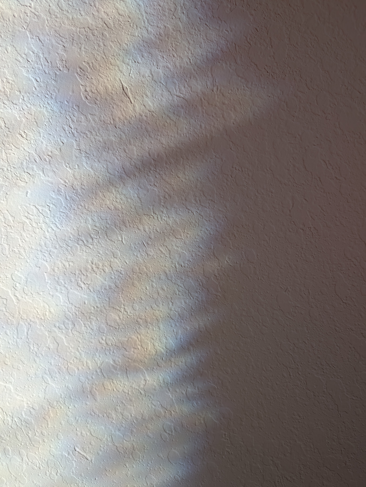
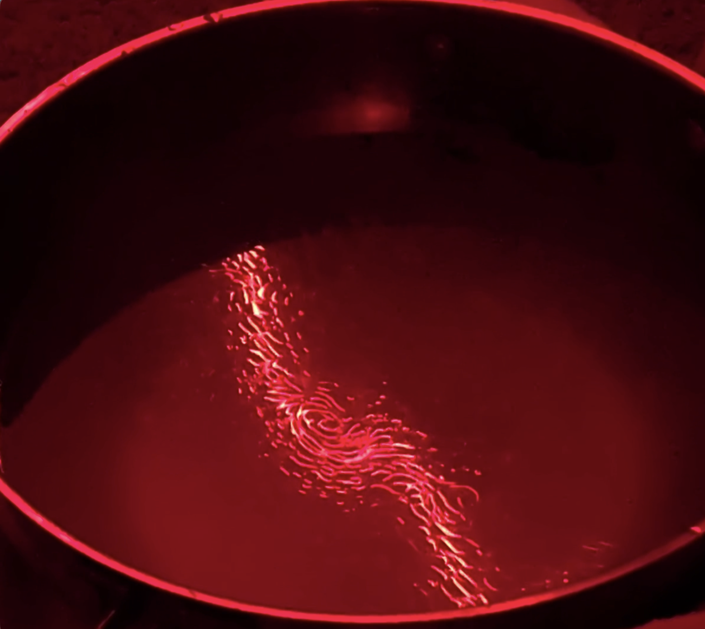

2026-07-29 — setting: field

Journal entries, recordings, observations from experience itself. Dated, unedited.
This melody will stop sooner than I thought.
Transportation.


Force software to calculate the decay of light over time.

The irreducibility of perceptual experience – the sensation ≠ the act.


Light apparently doesn't just illuminate matter, it also magnetically influences it. But how? Is there a prioritization with what is influenced? How is matter influenced?
Infusion's squeeze.
Noises, metal, shadows.